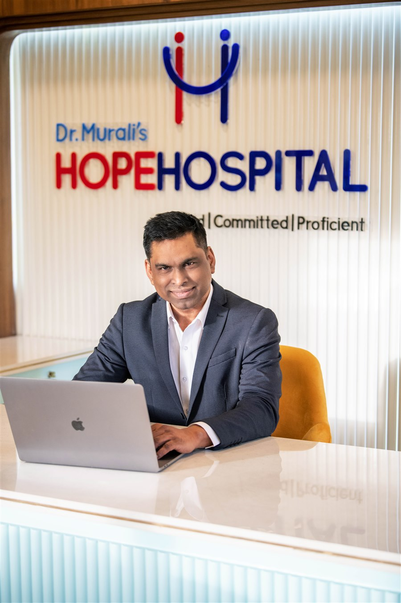

"Dr. B.K. Murali performed my father's knee replacement surgery. The entire team was professional, the facility is spotless, and recovery was faster than expected. Highly recommend Hope Hospital for orthopedic care."
Best Hospital in Nagpur Hope.
Healing.
Healthcare.
Trusted Multispeciality Hospital in Nagpur
Providing expert medical care with advanced technology and a patient-first approach. NABH-accredited, 20+ specialities, 19+ years of trusted care.
- NABH Accredited
- 19+ Years
- 5M+ Patients
- 24/7 Emergency

Surgical Specialties in Nagpur
Expert surgical care under one roof — covered under Ayushman Bharat & 20+ government health schemes
Knee Replacement, Nagpur
Advanced TKR & PKR with computer navigation. Free under Ayushman Bharat.
Learn more →Hip Replacement, Nagpur
THR, bipolar hemiarthroplasty & AVN treatment by Dr. B.K. Murali.
Learn more →Cancer Treatment, Nagpur
Surgical oncology, chemo & radiation via Nagpur Cancer Institute.
Learn more →Cardiac Surgery, Nagpur
CABG, angioplasty & heart valve surgery via Zion Cardiac Hospital.
Learn more →Kidney Transplant & Dialysis
NephroPlus dialysis, kidney transplant & stone treatment. Free under Ayushman Bharat.
Learn more →More specialties in Nagpur:
About Hope Hospital - Best Hospital in Nagpur
Best Hospital in Nagpur | NABH Accredited Super Specialty Center
Leading the way as the best hospital in Nagpur, delivering world-class medical care with compassion and excellence for over 19 years
Best Hospital in Nagpur - NABH Accredited Excellence Since 2012
Hope Hospital stands as the best hospital in Nagpur and Central India's first NABH-accredited comprehensive super specialty center, providing exceptional healthcare services to over 5 million people within a 500 km radius.
Founded by Dr. B.K. Murali — MS Ortho, Lokmat Healthcare Award winner and India Innovation Growth Programme finalist — with 19+ years of experience and 5,000+ successful surgeries. Our facility combines cutting-edge medical technology with compassionate patient care across our 100-bed, 24,000 sq ft state-of-the-art facility.
NABH Accredited
Certified excellence in healthcare quality standards
Expert Team
Highly qualified specialists and consultants
Advanced Technology
Latest medical equipment and facilities
Compassionate Care
Patient-centered approach to healing
Transplant Center
Recognized kidney transplant center
NephroPlus Partnership
Dialysis services by India's leading chain
100+ Beds
Hospital capacity
30 ICU Beds
Critical care unit
5,000+ Surgeries
Successfully done
20+ Specialties
Under one roof
19+ Years
Trusted healthcare
6+ Awards
National recognition
Patient Voices
What Our Patients Say About Hope Hospital
Real stories from families we've served across Nagpur and Central India. Read hundreds more on Google — and share your own experience to help others choose the right hospital.
"Brought my mother during a cardiac emergency at 2 AM. The Raftaar ambulance reached us in 15 minutes and the ICU team stabilized her immediately. We will forever be grateful to Hope Hospital's emergency team."
"Ayushman Bharat patient here. The empanelment process was smooth and the staff guided us through every form. Quality of care was the same as any paying patient — that's what real NABH accreditation means."
"I had hip replacement surgery here last year. The pre-op counselling, the surgery itself, and the physiotherapy follow-ups were all first class. I'm walking pain-free for the first time in 8 years."
"My dialysis treatment has been ongoing here for 2 years. The nephrology unit is clean, the machines are modern, and the nurses remember every patient by name. It feels like family."
"Took my child here for a pediatric consultation. The doctor was patient, explained everything in simple terms, and the waiting time was minimal. A caring team that families in Nagpur can trust."
Were you treated at Hope Hospital?
Your honest review helps other families choose the right hospital for their loved ones. It takes less than a minute.
Write a Google Review